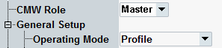

CMW Role
This section is only relevant for operating mode = Profile, see "Operating Mode, Profile".

CMW role configuration
Selects either the master or slave connection control role of the R&S CMW.
See also: "Tests without USB Interface".
Option R&S CMW-KS602 is required.
Remote command: